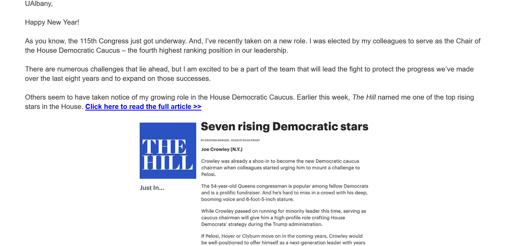
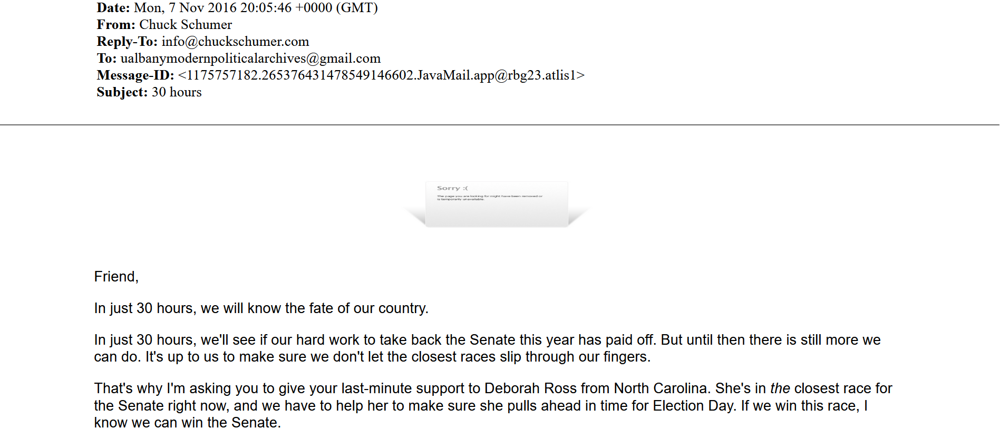
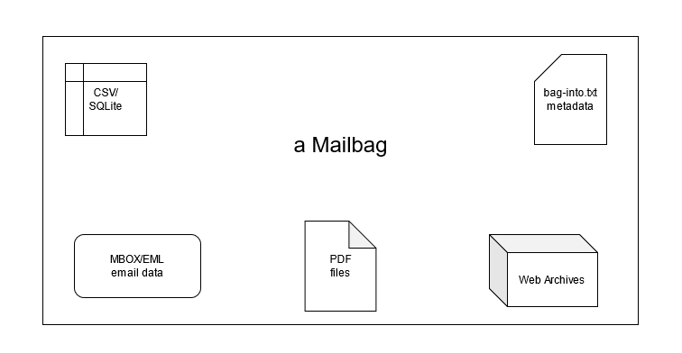

Gregory Wiedeman
University Archivist
University at Albany, SUNY
Email Preservation
No single master format for email
MBOX/EML don’t preserve external content
PST are similar and proprietary
PDFs do not preserve structure
Not all emails are static documents
Not many open source processing tools usable for archivists


Multiple Master Formats
MBOX/EML preserves structure as data
PDF preserves document and allows for easy access
WARC preserves interactivity
A Stable Package
BagIt
Widely used
Validates fixity
Uses filesystem for structure
Interoperable
ePADD
RATOM
Mailbag Specification

Email Processing for Archivists
Easy packaging near-to-capture
Existing tools are challenging for archivists
Python email libraries
Batch PDF creation from email
Web Archives capture
mailbag Python library
Command Line utility
Basic GUI with Gooey
Note: Diagram of Mailbag, showing inputs from IMAP, MBOX/EML and PST and outputs like reporting header information, exporting PDFs and repaying WARC files.